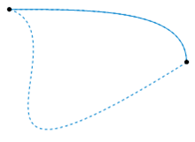

Can computers conquer mathematics?
HoTT Foundations, Learning
Siddhartha Gadgil
Department of Mathematics
Indian Institute of Science
Bangalore
Theorem Proving:
Enumeration, Computation, Deduction
Goals
Computer-Assisted proof components
Automated Deduction
Limits of Set theory and First-order Logic
Goals
- Goal: Use computers to greatly increase our ability to discover and prove mathematical results across areas of mathematics.
- Why?
- How?
What?
- There are infinitely many prime numbers.
- There are arbitrarily long arithmetic sequences all of whose elements are prime numbers.
- There are infinitely many natural numbers $n$ such $n$ and $n+2$ are both primes.
Computer-Assisted proof components
- Computers have been used in various ways to provide a component of a proof:
- Enumeration,
- Symbolic algebra,
- Exact real number arithmetic,
- Linear programming,
- SAT solvers.
- Some examples:
- Four colour theorem,
- Kepler conjecture,
- Boolean Pythagorean triples problem.
First-order logic: languages
- A first-order language, which describes a domain of discourse (e.g. $\mathbb{N}$) has vocabulary consisting of
- Variables - can be taken to be a fixed countable set.
- Constants (e.g. $0$, $1$).
- Functions (e.g. $+$).
- Predicates (e.g. $<$, $=$).
- Special symbols $\Rightarrow$, $\iff$, $\wedge$, $\vee$, $\forall$, $\exists$, ...
- We form two kinds of expressions from these, terms and formulas .
- Terms and formulas may depend on values of some variables.
- Terms represent objects in the domain of discourse.
- Formulas are either true or false.
Deduction and theories
- We can deduce formulas from other formulas using the rules of deduction.
- The main deduction rule is Modus Ponens : given $P$ and $P\Rightarrow Q$ we deduce $Q$.
- A theory is a language together with a collection of statements, called axioms in the language.
- A statement is deducible in a theory if it can be obtained from the axioms by the rules of deduction.
Universal deducer?
- An ultimate prover is a function which, given a deducible proposition (formula), returns a proof.
- By results of Turing, there is no such function.
- We can enumerate proofs and check if they prove either the given proposition or its negation. This does not always work as there are statements that are true but not provable.
- Practically, we can conclude that there is no best deducer, as all proofs can be found but no deducer can find them all.
Resolution theorem proving: Conjunctive normal form
- To prove a proposition $P$ from axioms, we can derive a contradiction from $\neg P$ and the axioms.
- We can rewrite $\implies$ and $\wedge$ in terms of $\vee$ and $\neg$.
- Suppose a variable is existentially quantified,
- e.g. $\delta$ in $\forall \epsilon \exists \delta\ |x| < \delta \implies |x|^2 < \epsilon$,
- we can regard the variable as a function $\delta(\epsilon)$,
- we extend the language with the additional function/constant.
- In the extended language we no longer need $\exists$, $\forall \epsilon\ |x| < \delta(\epsilon) \implies |x|^2 < \epsilon$.
- Variables without explicit quanitification are regarded as universally quantified.
Resolution theorem proving
- By the above process, we reduce to
- A sequence of statements, i.e., a conjunction of clauses.
- Each clause consists of atomic formulas and their negations combined by $\vee$, i.e., a disjunction of literals.
- From these we seek a contradiction - an empty clause.
- Resolution is the rule by which if two clauses are of the form $P\vee Q_1\vee\dots\vee Q_n$ and $\neg P \vee R_1\vee \dots\vee R_m$, we deduce $Q_1\vee\dots\vee Q_n\vee R_1\vee \dots\vee R_m$.
- Combined with unification, this is refutation complete.
- To handle equality efficiently, another rule called paramodulation is used.
First-order logic deducers; machine learning
- Theorem proving is thus reduced to a search for the empty clause, starting with a given collection of clauses and using moves such as resolution and paramodulation.
- Various search heuristics can be used.
- We can also add premises corresponding to theorems in a formal library (Mizar has been used for this).
- Machine learning has been used too select both strategies and premises.
Robbins conjecture
- Robbins conjecture was a conjectural characterization of Boolean algebras in terms of associativity and commutativity of $\vee$ and the Robbins equation $\neg(\neg(a\vee b)\vee \neg(a \vee \neg b)) = a$.
- This was conjectured in the 1930s, and finally proved in 1996 using the automated theorem prover EQP.
- So far, this seems to be the only major success of deductive theorem provers.
- First-order logic theorem provers are, however, used in interactive proof systems (hammer tactics).
Real-life mathematics
- A proof in real-life mathematics consists of:
- definitions, axioms, assumptions, notation;
- assertions;
- hints about which assertions, definitions etc. are used in the proof of a given assertion.
- The reader is expected to deduce all assertions based on the hint (or at least believe that he/she can do so).
- In particular, there is no objective sense in which a proof is complete or correct.
- Interactive proof systems modelled on human proofs, such as Mizar and Naproche, follow a similar approach.
“ Since the first half of the 20th century mathematics has been presented as a science based on ZFC and ZFC was introduced as a particular theory in Predicate Logic.
“ Therefore someone who wanted to get to the bottom of things in mathematics had a simple road to follow - learn what Predicate Logic is, then learn a particular theory called ZFC, then learn how to translate propositions about a few basic mathematical concepts into formulas of ZFC, and then learn to believe, through examples, that the rest of mathematics can be reduced to these few basic concepts.”
Why new foundations?
- In the usual foundations of mathematics, $sin(3)$ and $3(sin)$ are syntactically equally valid.
- We need additional (runtime) conditions for being well-defined.
- We do have types, i.e., syntactic restrictions, in Category theory and Higher-order logic.
- However, proofs are still not first class, so not composable.
- We instead have patterns of proof (such as induction) in mathematics, and tactical meta-language in formal proof systems (which are then implicitly part of the foundations).
“ The roadblock that prevented generations of interested mathematicians and computer scientists
from solving the problem of computer verification of mathematical reasoning was the
unpreparedness of foundations of mathematics for the requirements of this task.”
“ Formulating mathematical reasoning in a language precise enough for a computer to follow
meant using a foundational system of mathematics not as a standard of consistency applied only
to establish a few fundamental theorems, but as a tool that can be employed in everyday
mathematical work. ”
Martin-LÖf Type theory
Type theoretic Foundations
Terms, Types, Rules
Inductive types
Dependent Types
Propositions as types
Type theoretic foundations
- Mathematical objects, called terms have types .
- A term $a$ having a type $A$, denoted $a : A$, is analogous to an element $a$ belonging to a set $A$, i.e., $a \in A$.
- However the rules for forming terms and types, and for determining whether a term has a type, are purely syntactic.
- Nevertheless, the rules for forming types are rich enough that types can play the role of sets - for instance, prime numbers form a type.
- Even more remarkably, propositions and proofs can be expressed in terms of types and terms.
Terms, Types, Rules
- Mathematical objects are called terms.
- Every term has a type , generally unique.
- Types are also terms, whose types are universes.
- We have rules to introduce terms (including types), individually or in groups, into the context.
- Rules also let us make two kinds of judgements:
- that a term $a$ is of type $A$.
- that two terms are equal by definition .
- All the rules are syntactic.
- Note that terms can be equal without being so by definition.
- There is a relation (type family) propositional equality extending definitional equality.
Function types, functions and applications
- Given types $A$ and $B$, we can introduce the function type $A \to B$, whose members are functions.
- Given $f: A \to B$ and $a : A$, we get a term $f(a) : B$.
- We can construct a function $f: A \to B$ by giving an expression $b$ of type $B$ in terms of a variable $a : A$ and other terms in the context, i.e., $f : a \mapsto b$.
- We can also define functions recursively on inductive types .
Inductive types
- An inductive type $T$ is defined by specifying terms (usually functions) that construct members of $T$.
data ℕ : Type where
zero : ℕ
succ : ℕ → ℕ
sealed class Nat
case object zero extends Nat
case class succ(n: Nat) extends Nat
Recursive definitions
- We can define functions recursively on inductive types, by specifying in all cases.
- Formally, we can introduce recursion functions and apply them to the definition data.
_+_ : ℕ → ℕ → ℕ
zero + y = y
(succ x) + y = succ (x + y)
val sum: Nat => Nat => Nat = {
case zero => (m: Nat) => m
case succ(n) => (m: Nat) => succ(sum(n)(m))
}
Dependent functions and type families
- We generalize functions $f : A \to B$ to dependent functions, so that $f(a)$ has a type $B(a)$, depending in general on $a : A$.
- More precisely,
- A type family $B: A \to \mathfrak{U}$ is a function with codomain a universe, so all its values are types.
- Given a type family $B: A \to \mathfrak{U}$, we can construct a corresponding type $\prod_{a : A} B(a)$ of dependent functions.
- We can apply $f : \prod_{a : A} B(a)$ to $a : A$, to obtain $f(a) : B(a)$.
- Constructions of dependent functions are analogous to those of functions.
Vectors : an inductive type family
- We have a type family associating to each $n : \mathbb{N}$ the type of vectors of length $n$ with entries in a type $A$.
- This is an inductive type family with two constructors.
- We can define dependent functions to this type family inductively.
- Formally, we can construct an induction function and apply it to the data.
data Vector (A : Type) : ℕ → Type where -- inductive type family
[] : Vector A 0
_::_ : {n : ℕ} → A → Vector n → Vector (succ n)
countdown : (n : ℕ) → Vector ℕ n -- dependent function
countdown 0 = []
countdown (succ n) = (succ n) :: (countdown n)
Functions on type families
- We can define (dependent) functions on inductive type families recursively (inductively).
- However, we must define these simultaneously on all types in the inductive type family.
sum : {n : ℕ} → Vector ℕ n → ℕ
sum [] = 0
sum (x :: l) = x + sum l
Some useful Inductive types
- We can inductively define the types $\mathbb{0}$, $\mathbb{1}$, $A \times B$, $A \oplus B$.
- For a type family $B: A \to \mathcal{U}$, the dependent pair type $\sum_{a: A} B(a)$ has terms pairs $(a, b)$ with $b : B(a)$.
data True : Type where
qed : True
data False : Type where
data _×_ (A B : Type) : Type where
_,_ : A → B → A × B
data _⊕_ (A B : Type) : Type where
ι₁ : A → A ⊕ B
ι₂ : B → A ⊕ B
data Σ (A : Type) (B : A → Type) : Type where
_,_ : (a : A) → (B a) → Σ A B
Propositions as types
- A type $A$ is inhabited if there is a term $a$ with $a : A$.
- By propostion we mean a logical statement that must be true or false.
- We represent propositions by types.
- If a type $A$ is viewed as a proposition, a term $a : A$ is a proof of (or witness to) $A$.
- In particular, a proposition is true if and only if the corresponding type is inhabited.
- Note that we must be able to form types representing propositions of interest in mathematics by the type formation rules.
Combining propositions
Let $A$ and $B$ be types, regarded as representing propositions.
- The proposition $A \Rightarrow B$ is represented by $A \to B$.
- The propostion $A\wedge B$ is represented by $A \times B$.
- The proposition $A \vee B$ is represented by $A \oplus B$.
- The proposition $\neg A$ is represented by $A \to \mathbb{0}$.
Quantifying propositions
- A proposition depending on a variable $x : A$ is represented by a type family $P : A \to \mathfrak{U}$.
- The proposition $\forall x\ P(x)$ is represented by $\prod_{x: A} P(x)$.
- The proposition $\exists x\ P(x)$ is represented by $\sum_{x : A} P(x)$.
Identity type family
- For a fixed type $A$, propositional equality is given by the identity type family freely generated by reflexivity.
- This is an inductive type family.
- However, for fixed $a: A$, $a = a$ is not an inductive type, i.e., it is not suffiicient to define functions on $refl(a)$.
data _==_ {A : Type} : A → A → Type where
refl : (a : A) → a == a
symmetry : {A : Type} → {x y : A} → (x == y) → (y == x)
symmetry (refl a) = refl a
trans : {A : Type} → {x y z : A} → (x == y) → (y == z) → (x == z)
trans (refl a) (refl .a) = refl a
Homotopy type theory: Types as Spaces
Equality, Paths, Homotopy
Levels from dimension
Sets, Propositions
Types as Spaces
- We interpret
- Types as spaces.
- Terms of a type as points of the space.
- Functions $A \to B$ as continuous functions $A \to B$.
- For a type $A$ and terms $x, y: A$, the identity type $x = y$ as paths in $A$ from $x$ to $y$.
- We do not actually construct spaces, i.e., sets with topology, starting with a type.
- Instead we make topological (specifically homotopy theoretic) constructions and prove topological results in type theory.
- A practical consequence for type theories is that we get a canonical, provably consistent, type theory.
Equality, Paths, Homotopies
- As above, for a type $A$ and $x, y : A$, a term $p : (x = y)$ is interpreted as a path from $x$ to $y$.
- Two such paths are equal if there is a path of paths, called a homotopy, between them. 
- We have similar notions of equality for functions.
- Types are equal if the corresponding spaces are homotopy equivalent, as a consequence of the Univalence axiom.

Dimension and levels
- We define levels of types, based on a characterization of dimension in homotopy theory.
- By definition, there is a unique type at level $-2$ (the lowest), which has a single term.
- Inductively, we define the level of a type $A$ to be at most $(n + 1)$ if for $a, b : X$, the type $a = b$ has level at most $n$.
- Further, we can truncate a type canonically to an $n$-type.
Sets and mere propositions
- A set is a space with all of its components contractible.
- A type $A$ is a set if for $x, y: A$ and $p, q: x = y$, we have $p = q$.
- A mere proposition is a type which is either empty or all of its elements are equal, i.e., a type at level $-1$.
- The concept of mere propostions, as well as propositional truncation, allow consistent mixing of classical logic with the type theoretic form.
- For instance, in homotopy type theory the law of excluded middle is usually assumed for mere propositions, but not for all types.
Lean theorem prover
- In a language like Agda, it is practical to write moderate sized proofs fully formally.
- The lean theorem prover allows this, and also has an elaboration engine to help complete proofs efficiently.
- Checking a (fully elaborated) proof is fairly easy, and lean has an efficient export format and an independent Haskell typechecker to do this.
- The export format, server and API also allow efficient integration with other systems.
Proving-Ground: Theorem proving by Learning
HoTT implemented in Scala
Reinforcement learning
Representation learning
Natural language processing
Reinforcement learning: non-trivial theorems
- Useful mathematical objects are terms representing useful types.
- Given weights on terms and types, non-trivial objects are those representing types of high weight (low complexity) so that the total weight of terms inhabiting the type is low.
- Further, useful theorems are those from which non-trivial theorems are derived.
- These can be captured by considering the map from terms to types, and backward propagating.
Reinforcement learning: term-type map
- Given an initial distribution on terms, rules for forming terms gives a new distribution.
- Given a probability distribution on terms, we get one on types by mapping a term to its type (proof distribution).
- As (inhabited) types themselves are terms, we get a restricted distribution on them (theorem distribution).
- We have a flow of the proof distribution towards the theorem distribution.
- The gradient gives a distribution on terms, which we backward propagate.
- It is useful to freeze the distribution on terms.
- We may also learn using a distribution from the (formalized) literature.
Representation learning
Using proximity and order, words, mathematical objects etc can be represented by vectors which capture many of their relations.
NLP: extracting from human literature.
- We try to extract mathematical objects from the literature, with reasonably high accuracy.
- These can be used for learning, both giving terms from which to generate others, and a distribution on types.
- This is similar to a translation problem, except the target language has strong restrictions on sentences being meaningful and true.
- To extract from natural language, we first use a parser to break a sentence into a tree like structure.